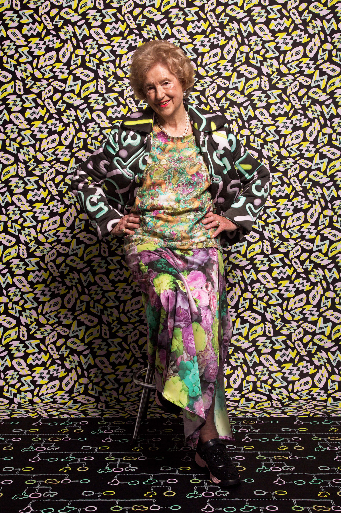
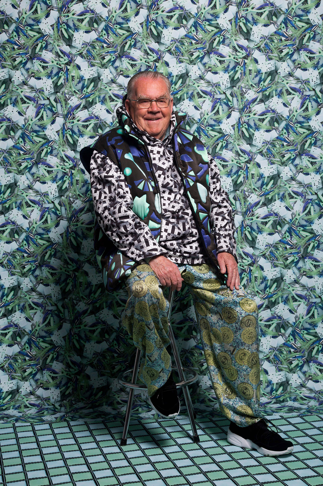
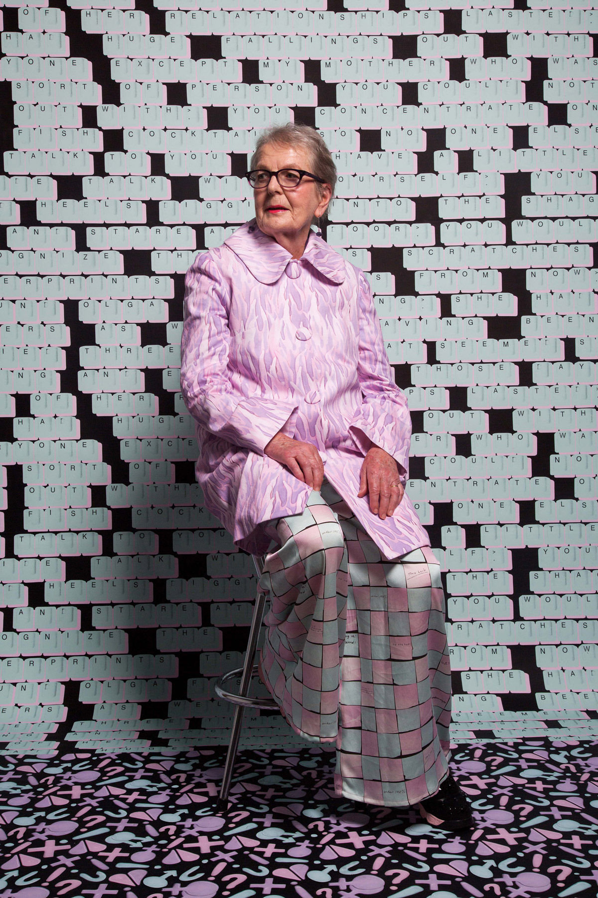

Digital Print, 2018
Small-scale collection of digitally printed clothing, sold online.
Fritters, 2016–2018
Handmade jewellery range experimenting with colour, pattern and form. Sold online and in stores throughout New Zealand.
3
For the Life of Me, 2016
Final Honours project. Celebrating the rich lives of three senior citizens through a combination of story, motif and colour.






Digital Embroidery, 2016
An exploration of the colour and tactility of flowers found in Wellington Botanic Garden.
Natural Dye, 2016
Hand dyed silk using cabbage and avocado skins.
Screen Print, 2015
Hand dyed and screen printed merino and eva foam.
1
3
Artist & Textile Designer
I am a visual artist and designer with a wide range of interdisciplinary skills. My practice explores colour, tactility and repeat pattern to provide a fresh and approachable response to both textile and fashion design.
Education
2013–2016
Massey University
Bachelor of Design
Textile Design
First Class Honours
w/ Massey Scholar